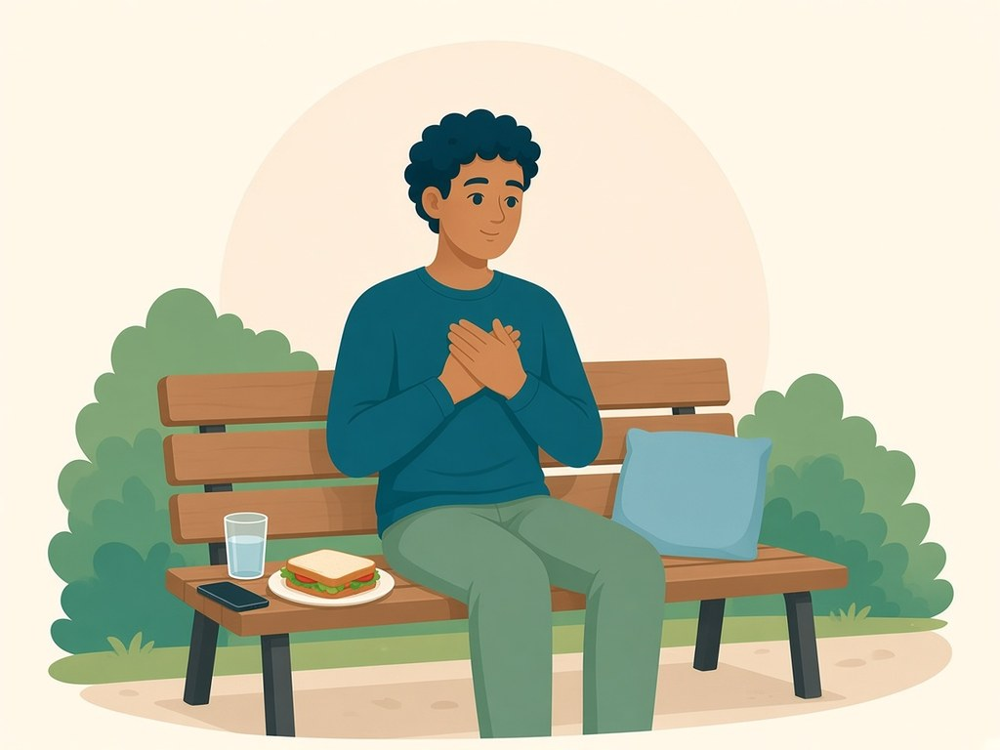

Library › Guides
HALT
Hungry, Angry, Lonely, Tired. A pause, not a medical check.

HALT asks four ordinary questions. It does not diagnose you.
Hungry: when did you last eat? A simple meal can turn the volume down.
Angry: is something unnamed? You can tell a sponsor or write it down.
Lonely: who is one safe person, or one meeting, in the next day?
Tired: is this a sleep problem wearing a craving's coat? Rest counts.
Where this comes from
HALT comes from the recovery community, especially twelve-step groups. Nobody is sure who first said it. A 2025 paper on its history could not trace its first use, and it is often described as recovery folk wisdom.
Why it can help
Hunger, anger, loneliness and tiredness are ordinary states that make it harder to think clearly and easier to act on an urge. The check is quick, and the fixes are often simple: eat, name what is wrong, reach out, rest. A US counseling guide suggests it as a way to look after basic needs early. It is a self-check, not a diagnosis.
For any health concern, talk to your doctor. HomeCircle is support, not medical care.